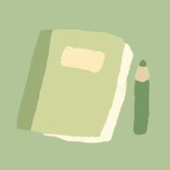

SynergyHow do you feel today?
Tap the time to change it · Space starts or pauses
Notes · you left the page 0 time(s)
Need a word meaning? Use the dictionary button at the top. Pause, reset and skip are locked until the timer ends.
Break time
Today's tasks
Starter tasks for beginners
Based on Japanese study habits like kaizen (tiny steps), hansei (reflection) and a tidy desk. Tap + to add a task to today.
Tap a task's name to edit it. Add your own tasks from the Calendar: open a day and press +.
The message stays hidden until this time. Then it arrives here as a reminder and rings.
Storage
Alarms and reminders ring full screen and do not need notifications. The page must stay open, and the screen is kept awake while something is due in the next 3 hours. Tap anywhere on the page once after opening it so sound is allowed. For overnight alarms, also set one in your phone's own Clock app.
Help
How to use Synergy
- Start of the day: Synergy asks how you feel and can add starter tasks for beginners. You can edit them before adding.
- Timer: tap the time to change its length. Mood, stats and today's tasks are around the timer. Tabs switch to Alarm, Stopwatch and Clock.
- When a session ends: a full-screen reminder asks if you want to take a break or keep studying. Breaks suggest stretching, no phone, recalling what you learned and an eye rest.
- Calendar: Today, Schedule, Week, Month or Year. Open a day to add tasks with +, stickers and your mood.
- Chat: message yourself. Use + to attach, the clock button to set when it arrives, and the Files tab for everything you saved.
- Dictionary: the book button at the top looks up a word and keeps a list of your saved words. It also works while the timer runs.
- Strict mode: after you type a promise you cannot pause, reset or skip. Notes, the dictionary and saved study items still work.
- Videos: YouTube links you saved open in a focus player. You are warned if another video opens or you leave the page.
- Alarms and reminders: they ring full screen while the page is open. Set a phone alarm too for important ones.